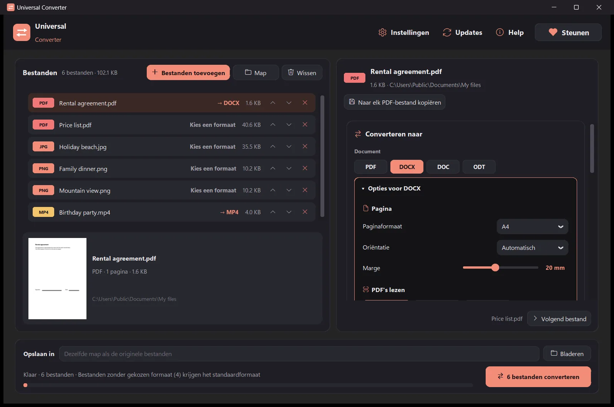

Word-documenten converteren naar PDF
Een PDF ziet er op elk apparaat hetzelfde uit, en dat maakt het de veiligste manier om een cv, een contract of een formulier te versturen. Universal Converter zet Word en andere documenten om naar PDF zonder ze te uploaden, en kan meerdere bestanden samenvoegen tot één PDF.
Installeren en bijwerken
- Open het gedownloade .dmg-bestand en sleep Universal Converter naar Apps.
- Open de app. De eerste keer blokkeert macOS hem omdat hij niet door Apple is ondertekend: klik op Gereed.
- Open Systeeminstellingen > Privacy en beveiliging, scrol omlaag, klik op Toch openen en voer je wachtwoord in. Dit doe je maar één keer.
Updates: als je het toestaat wanneer de app voor het eerst opent, zoekt hij bij elke start naar nieuwe versies, controleert hij hun digitale handtekening en installeert hij ze wanneer jij dat kiest.
Installeren en bijwerken
- Tik op je telefoon op Downloaden voor Android.
- Open het gedownloade bestand. Als Android erom vraagt, sta je browser of bestandsbeheerder toe apps te installeren.
- Tik op Installeren.
Updates: als je de app opent, zoekt hij naar een nieuwe versie en meldt het als die klaarstaat. Download die op dezelfde manier en installeer hem over de oude; je instellingen blijven bewaard.
Installeren en bijwerken
- Download het .AppImage-bestand.
- Maak het uitvoerbaar: klik er met de rechtermuisknop op, open Eigenschappen > Rechten en sta toe dat het als programma wordt uitgevoerd (of in een terminal: chmod +x Universal-Converter-*.AppImage).
- Dubbelklik erop. Er wordt niets geïnstalleerd: de app is dit ene bestand.
Updates: als je het toestaat wanneer de app voor het eerst opent, zoekt hij bij elke start naar nieuwe versies, controleert hij hun digitale handtekening en vervangt hij het AppImage-bestand waar het staat.
Zo doe je het
- Open Universal Converter.
- Sleep je bestanden of een hele map naar het venster, of klik op Bestanden toevoegen.
- Kies PDF. Gebruik Samenvoegen tot één PDF om meerdere bestanden in één PDF te zetten.
- Klik op Converteren. De nieuwe bestanden worden naast de originelen opgeslagen, of in de map die je kiest.

Waarom offline?
Universal Converter doet het werk op je eigen apparaat. Je bestanden blijven privé, grote bestanden zijn geen probleem, en het werkt zonder internetverbinding.
Meer wat hij kan
- Een PDF converteren naar Word
- Meerdere bestanden samenvoegen tot één PDF
- Een PDF comprimeren tot een grootte die je kiest
- Een PDF comprimeren tot 100 KB, 200 KB of elke grootte voor online formulieren
- PDF-pagina's converteren naar JPG-afbeeldingen
- Een gescand document omzetten in een bewerkbaar Word-bestand
- Afbeeldingen converteren tussen JPG, PNG, WEBP en meer
- Het formaat van afbeeldingen wijzigen of ze verkleinen tot een bestandsgrootte
- Een foto of handtekening verkleinen tot 20 KB, 50 KB of exacte pixels
- Foto's samenvoegen tot één PDF
- JPG naar PDF onder 100 KB
- De tekst uit een afbeelding kopiëren (OCR)
- Een video comprimeren zonder hem te uploaden
- Video's converteren tussen MP4, MKV, WebM, MOV en AVI
- Het geluid van een video opslaan als MP3
- Een GIF maken van een video
- Tabellen uit een PDF naar Excel halen
- Een bankafschrift in PDF converteren naar Excel
- Tabellen uit PDF-facturen naar Excel halen
- Een PDF ondertekenen
- Een PDF-formulier invullen